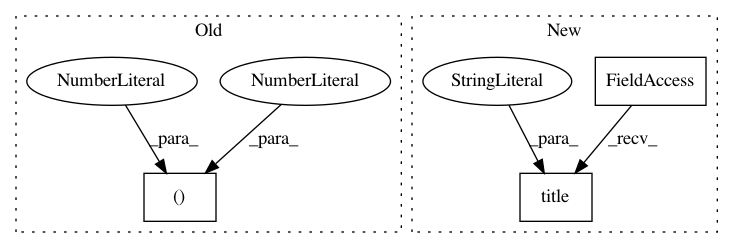

6c524d66dcd30d98a0f0c991252a3be644fa58ef,doc/examples/compute_SNR_in_corpus_callosum.py,,,#,25
Before Change
print("Saving illustration as cfa_mask.png")
fvtk.record(ren, n_frames=1, out_path="cfa_mask.png", size=(800, 800))
After Change
plt.figure("Corpus callosum segmentation")
plt.subplot(1, 2, 1)
plt.title("Corpus callosum")
plt.imshow((cfa[..., 0])[40, ...])
plt.subplot(1, 2, 2)
plt.title("Corpus callosum mask with a threshold of (%.1f, %.1f, %.1f, %.1f, %.1f, %.1f)" % threshold2)
In pattern: SUPERPATTERN
Frequency: 3
Non-data size: 3
Instances
Project Name: nipy/dipy
Commit Name: 6c524d66dcd30d98a0f0c991252a3be644fa58ef
Time: 2013-09-11
Author: stjeansam@gmail.com
File Name: doc/examples/compute_SNR_in_corpus_callosum.py
Class Name:
Method Name:
Project Name: nipy/dipy
Commit Name: cf7d0bdc4133ea3248e054fa93aa2b5a6f8f2fca
Time: 2013-09-11
Author: stjeansam@gmail.com
File Name: doc/examples/compute_SNR_in_corpus_callosum.py
Class Name:
Method Name:
Project Name: lmcinnes/umap
Commit Name: c2ccb9ed0c2c4addbff32a2fe18dbfb2f148dd43
Time: 2018-06-22
Author: leland.mcinnes@gmail.com
File Name: examples/plot_fashion-mnist_example.py
Class Name:
Method Name: